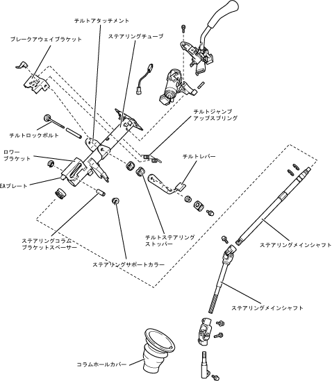

| Steering shaft |
| ● |
The Tilt Organization is composed of a pair of tilt steering stopper, rock bolt, break -wake bracket, steering column bracket spacer, steering support color and tilt lever, making it possible to adjust the angle mainly with the steering column bracket spacer.Masu.
|
|  |
 Operation of steering shaft Operation of steering shaft
|